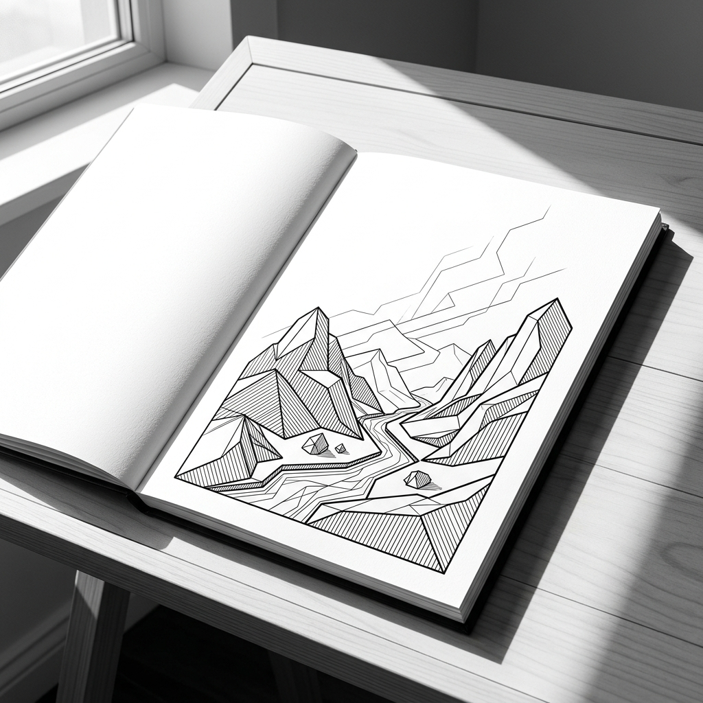

5 Poems in Ink & Resilience. All-new fine-art plates generated directly from each poem's instructions and imagery in the calibrated jeff_geometric style.

What we leave unsaid—and unlined—often carries more power than what we fill in. In this test eBook, each original poem serves directly as the visual blueprint and prompt instructions for an all-new fine-art plate rendered in the calibrated jeff_geometric style with Gestalt subtractive facial restraint.